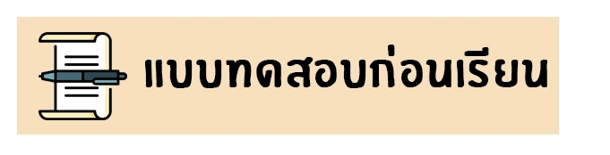
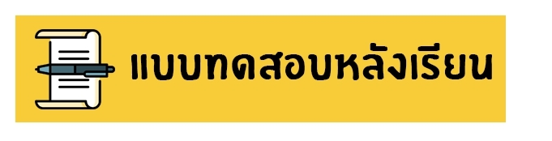
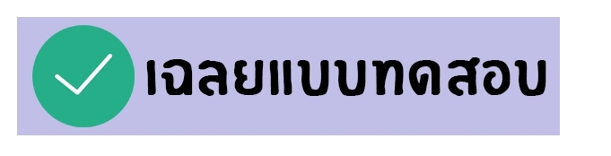
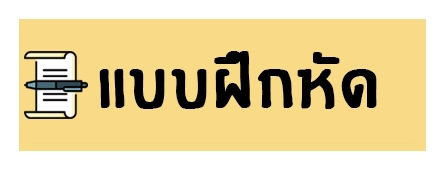
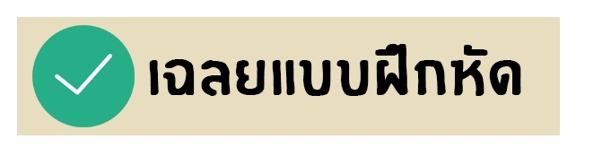
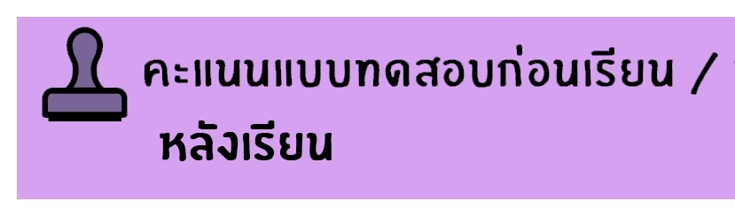

<ion-header>
  <ion-toolbar>
      <ion-buttons slot="start">
          <ion-menu-button></ion-menu-button>
        </ion-buttons>
    <ion-title>แบบทดสอบก่อน-หลังเรียน และแบบฝึกหัด</ion-title>
  </ion-toolbar>
</ion-header>

<ion-content>
 <div style="text-align: center;">
    
    
    
    
    
        
  
   </div>     
</ion-content>


